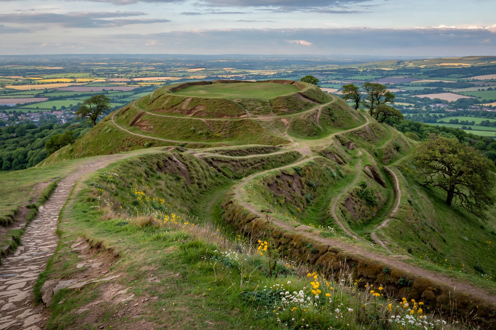

British Camp is an Iron Age hill fort located at the top of Herefordshire Beacon in the Malvern Hills, England. Also known as Herefordshire Beacon Camp, it consists of extensive earthworks thought to date from the 2nd century BCE.

Multivallate ramparts enclose about 44 acres, with a citadel, and later Norman motte and a Shire Ditch boundary. Popularly linked in folklore to Caratacus's last stand, though unproven.
Near Great Malvern, Worcestershire/Herefordshire border, with panoramic views. Managed by Malvern Hills Trust. See Hillfort, Malvern Hills.